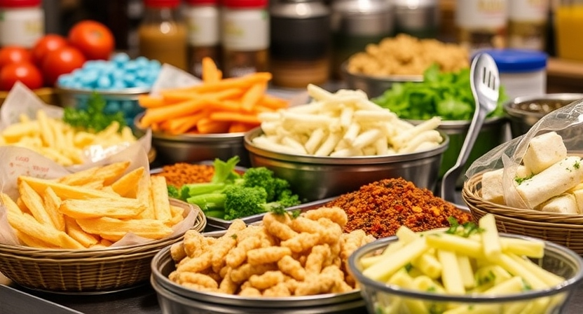
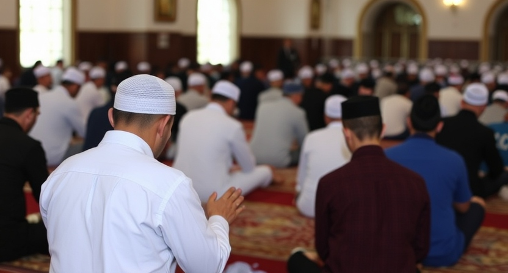
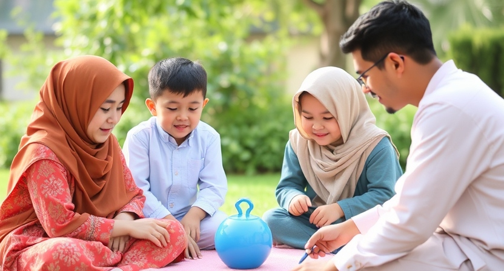
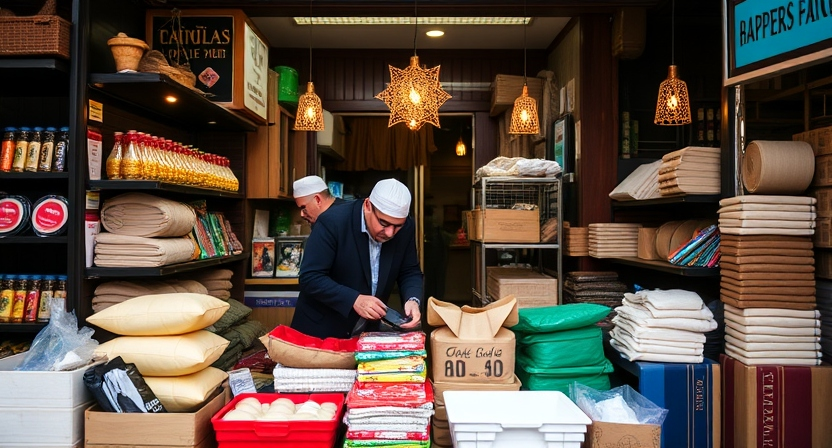

Explore the beauty of Kasaragod with helpful tips for Muslim travelers, making your trip comfortable, halal, and enjoyable.
Ensure your meals are halal by visiting restaurants that serve authentic Muslim food. In Kasaragod, you will find a number of halal-certified restaurants and eateries.
Kasaragod offers several mosques, including the famous Malik Deenar Juma Masjid, where you can perform your daily prayers. Plan your trips around prayer times for convenience.
While exploring Kasaragod, dress modestly to respect the local culture and traditions. This will also make your experience more comfortable in public places and mosques.
Kasaragod is a great place for family vacations. Enjoy the beautiful beaches like Kappil Beach and visit cultural sites like the Bekal Fort with your family.
Be mindful of your surroundings and avoid activities that are not aligned with Islamic values, such as consuming alcohol or engaging in un-Islamic entertainment.
Support local Muslim-owned businesses in Kasaragod by purchasing halal products and services. This helps the local economy and strengthens the Muslim community.
Follow these Islamic travel tips to make your journey to Kasaragod more enjoyable, respectful, and aligned with your values.
Start Planning Your Trip